Using Squish
Squish is an automated GUI testing framework for testing Android, iOS, Java, macOS, Qt, Tk, Windows, and XView applications, as well as HTML-based web applications running in browsers, such as Apple Safari, Mozilla Firefox, Google Chrome, and Microsoft Internet Explorer and Edge.
The experimental Squish plugin integrates Squish into Qt Creator. You can:
- Open existing Squish test suites.
- Create new test suites and test cases.
- Record test cases (in a very limited way compared to what you can do inside the Squish IDE).
- Use Squish Runner and Server to run test suites or cases and view the results in the Squish output.
- Set breakpoints before running tests to stop at certain locations and inspect the local variables, similarly to when debugging a test.
When running test suites or cases, the Squish Runner instructs the Squish Server to start the application under test (AUT). The server can be running on multiple machines, and the AUT can be located on a different path on each of them. Therefore, you must either map AUTs to their corresponding paths or specify AUT paths to search from in the server settings.
In addition, you can test an already running application by attaching to it. This enables you to test your application using a Squish Server running on another machine. However, you can have only one server attached to your application at a time. Also, the attached application is not closed when the test case is completed.
To use the plugin, you must download and install Squish, create a connection to the Squish Server, and specify AUTs to run.
Note: Enable the Squish plugin to use it.
Specifying a Squish Server
To specify a Squish Server to run:
- Select Preferences > Squish.
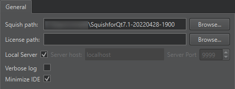
- In the Squish path field, specify the path to the Squish installation directory.
- In the License path field, specify the path to your Squish license file if it is not located in your home folder. For example, if you have a global installation with several users, where the license key is installed in the global folder.
- Select the Local server check box to use a locally installed
squishserver.exe. To use a server running in another machine, deselect the check box and specify the server address in the Server host field and the port number in the Server port field. If no port is specified, Qt Creator startssquishserverin a way that enables it to automatically select an open port. - Select the Verbose log check box to include additional logging levels in the log output.
- Select the Minimize IDE check box to automatically minimize Qt Creator when running or recording test cases.
Specifying AUTs
To specify applications to test using Squish, select Tools > Squish > Server Settings.
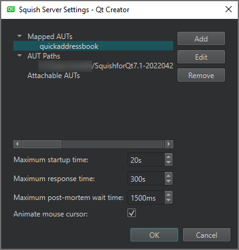
Mapping AUTs
To specify the path to an AUT to run, select Mapped AUTs > Add and locate the AUT.
The Squish server checks whether the name of the AUT to run is mapped to a path and starts the AUT using the mapped path. This way, it does not need to search from all the specified AUT paths.
Mapping AUTs prevents the server from accidentally executing the wrong AUT if two different executables have the same name, as the server executes the first matching AUT it finds in the AUT Paths list.
To change the path to the selected AUT, select Edit.
To remove the mapping to the selected AUT, select Remove.
Specifying AUT Paths
To specify a path to search AUTs from, select AUT Paths > Add.
The Squish Server searches for the executable to run from the specified AUT paths and runs the first one with the specified name that it finds in any path.
To change the selected AUT path, select Edit.
To remove the selected AUT path, select Remove.
Adding Attachable AUTs
To specify the path to a running AUT, select Attachable AUTs > Add. In the Add Attachable AUT dialog, specify a connection to a running application to register an attachable AUT.
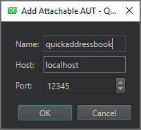
To change the connection to the selected AUT, select Edit.
To remove the connection to the selected AUT, select Remove.
Managing Test Suites and Cases
You can manage Squish test suites and cases in the Squish view.
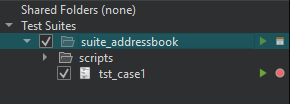
To show existing test suites in Test Suites, select Open Squish Suites in the context menu.
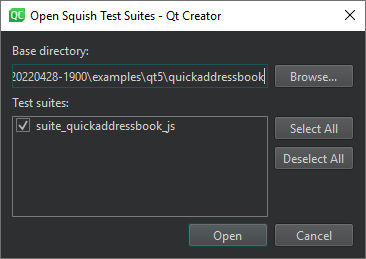
You can open the Squish Test Suite wizard for creating a new test suite by selecting Create New Test Suite in the context menu.
To add a test case to a test suite, select it and then select Add New Test Case in the context menu.
To close all test suites, select Close All Test Suites in the context menu.
To add a shared folder to Shared Folders, select Add Shared Folder in the context menu. To remove all shared folders, select Remove All Shared Folders.
Double-click a test suite in Test Suites to open the suite.conf configuration file for editing.
Creating Test Suites
To create a new test suite:
- Select File > New Project > Squish > Squish Test Suite > Choose.
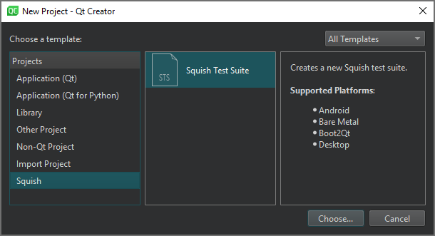
- On the Location page, in Test Suite Name, enter a name for the test suite.
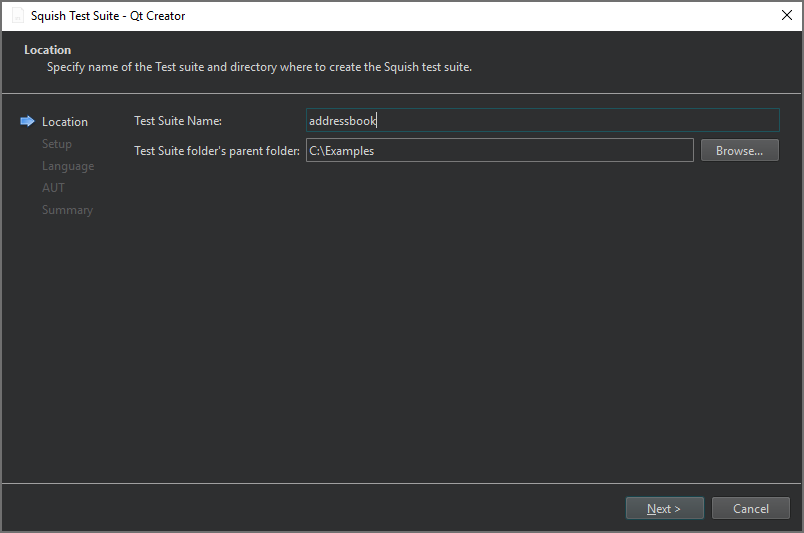
- In Test Suite folder's parent folder, enter the path to the folder to create the test suite folder, and then select Next.
- On the Setup page, select the GUI toolkit used by the AUT, and then select Next.
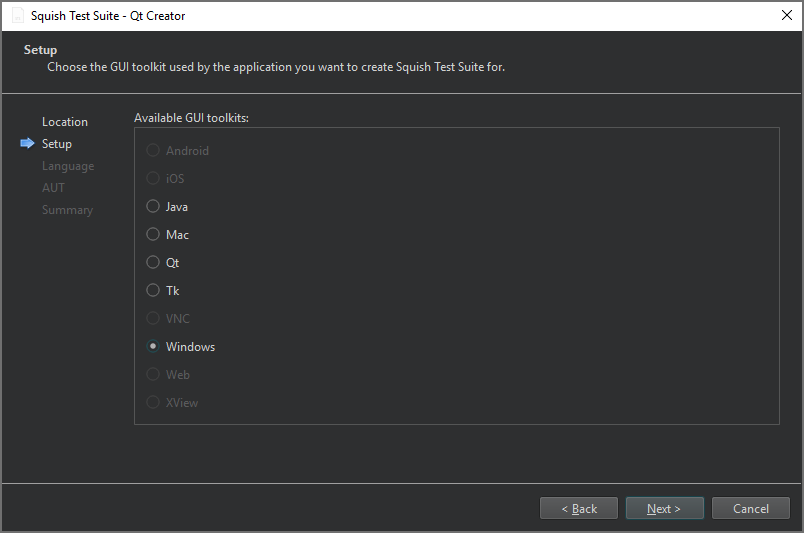
Currently, only desktop GUI toolkits are supported.
- On the Script Language page, select the scripting language to use for the test suite's test script, and then select Next.
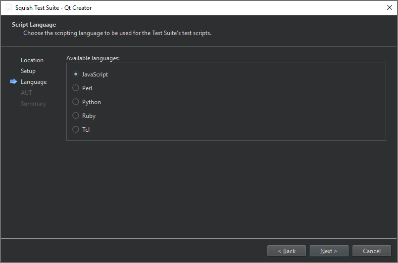
- On the AUT page, select the AUT to test, and then select Next.
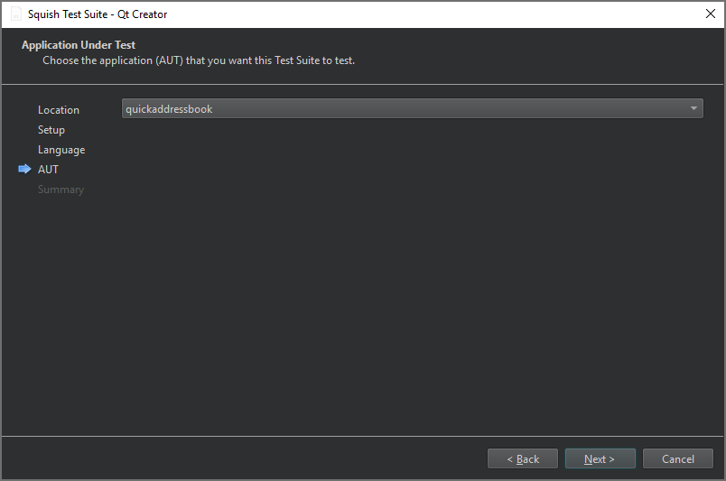
- On the Summary page review the test suite settings, and then select Finish to create the test suite.
The test suite is listed in Test Suites in the Squish sidebar view.
Recording Test Cases
Squish records tests using the scripting language that you specified for the test suite. Recordings are made into existing test cases.
In Test Suites, select the (Record Test Case) button next to the test case name. The AUT that you selected for the test suite is displayed and you can start recording the test case.
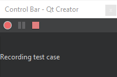
When you are done, select the  (Stop) button in the Control Bar.
(Stop) button in the Control Bar.
You can edit recorded test scripts or copy parts of them into manually created test scripts.
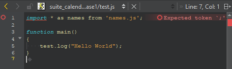
Running Test Suites
You can run a recorded test case to have Squish repeat all the actions that you applied when recording the test, but without the pauses that humans are prone to but which computers don't need. To run a test case, select the  (Run) button next to the test case in Test Suites.
(Run) button next to the test case in Test Suites.
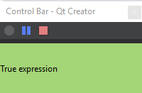
While the test is running, you can view test results as well as interrupt and stop tests in the Control Bar.
Mapping Symbolic Names
When Squish records a test, it uses symbolic names to identify the UI elements. Symbolic names are stored in an object map that can be either text-based or script-based. Text-based symbolic names are plain strings starting with a colon (:), whereas script-based symbolic names are script variables.
Squish generates symbolic names programmatically, but you can use them in hand-written code, or when you edit test cases or use extracts from recorded test cases.
Symbolic names have one major advantage over real names: if a property that a real name depends on changes in the AUT, the real name becomes invalid, and you must update all occurrences of it in test scripts. When using symbolic names, you only need to update the real name in the object map. You do not need to make any changes to the tests.
To edit the object map of a test suite, select the (Object Map) button next to the test suite in Test Suites.
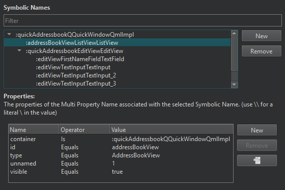
You can filter the symbolic names in the Symbolic Names view. To edit a symbolic name or the names or values of its properties, double-click the name or value in the view and enter a new one.
To add a new symbolic name, select New. Double-click the placeholder for the name and enter a new name. Then select New next to Properties to enter properties for the symbolic name.
To remove the selected symbolic name or property, select Remove.
To jump to the symbolic name associated to the selected property, select .
Inspecting Local Variables
If you set breakpoints in the test code before running the test, the test execution is automatically interrupted when a breakpoint is hit. You can inspect the contents of local variables in the Squish Locals view.
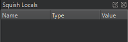
Use the Step Into, Step Over, and Step Out buttons in the Squish debugging view to step through the code.
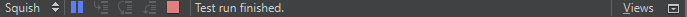
Specifying Settings for Running Tests
To specify settings for running tests, select Tools > Squish > Server Settings:
- In the Maximum startup time field, set the maximum time to wait for the AUT to start before throwing an error.
- In the Maximum response time field, set the maximum time to wait for the AUT to respond before throwing an error.
- In the Maximum post-mortem wait time field, set the maximum time to wait after the main AUT has exited. This is useful for AUTs invoked through launcher applications, such as shell scripts or batch files.
- Select the Animate mouse cursor check box to animate the mouse cursor when playing back a test.
Viewing Test Results
Squish uses compare, verify, and exception functions to record the results of tests applied to a running AUT in the test log as passes or fails. In addition, any kind of test results can be recorded in the test log.
You can view the test log in the Squish output, Test Results tab.
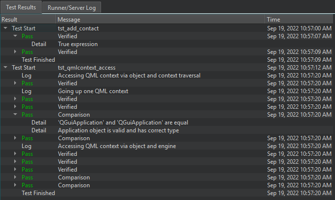
The Result column displays the time when each test run started and finished, log information and warnings, and test result status:
- Pass - The test passed.
- Fail - The test failed.
- ExpectedFail - The test failed, as expected. For example, a known bug in the AUT caused a comparison or verification to fail.
- UnexpectedPass - The test passed unexpectedly. For example, a comparison or verification succeeded even though it was expected to fail.
The Message column displays log messages and information about the type of the operation that was performed: comparison, verification, or exception.
Viewing Squish Runner and Server Logs
You can view the Squish Runner and Server logs in the Squish output, Runner/Server Log tab.
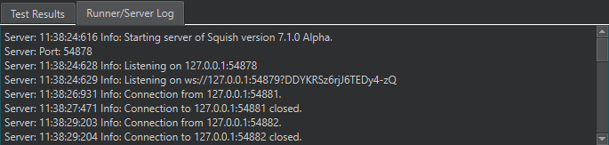
See also Enable and disable plugins.